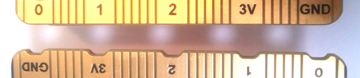

| PCに rb:-:bitをインストールするだけで micro:bitを操作できますか？ | |
| いいえ。 | |
|
rb:-:bitと通信をするためのプログラムを micro:bitに転送しておく必要があります。 詳しくは「準備作業」の内容を参照してください。 |
| PCと micro:bitは USBケーブルで接続した状態でないといけませんか？ | |
| はい。 | |
|
現状では、USBケーブルによる有線接続のみ対応しています。 Bluetooth(BLE)によるワイヤレス接続は今後対応予定です。 |
| micro:bitが接続されているシリアルポート(デバイス)がわかりません。 | |
| 「シリアルポート(デバイス)の確認」の内容を参照してください。 |
| サンプルプログラムを動かしたいのですが、環境変数の設定が必須ですか？ | |
| いいえ。 | |
|
micro:bitの接続先を指定するために、環境変数に設定する方法と プログラム実行のつど引数として指定する方法があります。 サンプルプログラムの実行方法についての詳細は、下記のページを参照してください。 「サンプルプログラム(WebSocketサーバ)」 「サンプルプログラム(Rubyクラスライブラリ)」 |
| micro:bitから音が出ません。 | |
|
サウンドの機能を使う場合には、micro:bitにスピーカーを装着してください。 (micro:bit v2.0ではスピーカーが標準装備されています) |
|
rbbitコマンドで WebSocketサーバの起動/停止を繰り返したら、 ブラウザ上の WebSocketクライアントのプログラムが動かなくなってしまいました。 |
|
| ブラウザでリロードの操作をおこなってください。 | |
|
WebSocketサーバを停止させると WebSocketクライアントとの接続が切断されるので、 WebSocketサーバを再度起動した場合はブラウザでリロードの操作が必要になります。 |
| クラスライブラリのメソッドがうまく動作しません。 | |
| 下記の点について確認してみてください。 | |
|
(1)WebSocketサーバによって micro:bitとの接続が占有されている可能性がありますので、 WebSocketサーバが稼働している場合は rbbitコマンドのプロンプトからexitを入力して停止させてください。 |
|
|
(2)micro:bitの接続先のシリアルポート(デバイス)が正しく指定されていない可能性がありますので、 引数として与えている内容や環境変数「MB_PORT」の設定内容を確認してください。 |
| クラスライブラリを使ったプログラムで、micro:bitの処理途中にリセットされてしまいます。 | |
|
macOS上では、PCと micro:bitの通信が切断されるときにブレーク信号が送出され、 これを受けてmicro:bitはリセットの動作をおこなうようです。 |
|
closeメソッドの引数で切断までの遅延時間を指定することができますので、その値を長めにとって micro:bit側の処理が終わるまで待つようにしてみてください。 |
| 複数の micro:bitを操作することはできますか？ | |
| はい。 | |
|
PCに接続された micro:bitにはそれぞれ異なるシリアルポート(デバイス)が割り当てられるので、 そのシリアルポート(デバイス)を正しく指定することで複数の micro:bitを操作することが可能です。 また、WebSocketサーバ用のポート番号は任意に指定することができるので、 micro:bitごとに別のポートを割り当てることで ブラウザなどからも複数の micro:bitを操作することができます。 (WebSocketサーバのポート指定方法については、 WebSocketサーバ リファレンスのページを参照してください) |
| micro:bitのバージョン(v1.5 と v2.0)の見分け方を教えてください。 | |
| エッジコネクターの部分に凹みがあるかないかで判別できます。 | |
|
凹みがなくまっすぐになっている方が「v1.5」(写真上側)で、 凹みのある方が「v2.0」(写真下側)です。 |
|
|  |